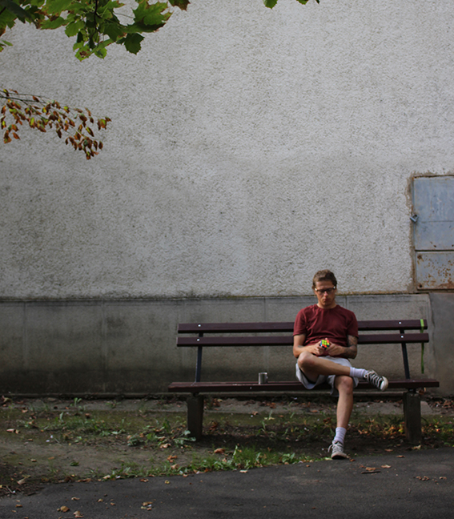
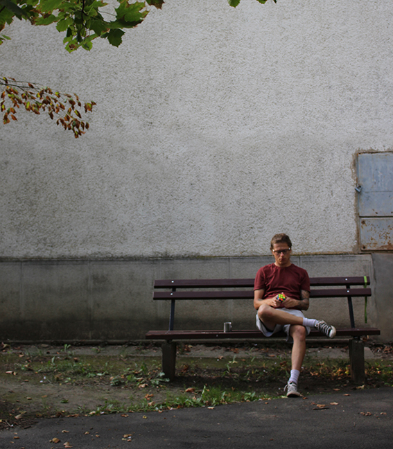

Alexa István vagyok, lelkes amatőr.
30 éves srác aki tudásához mérten igyekszik a legjobbat kihozni a magából. Ha logókat, névjegykártyákat vagy bármilyen más grafikai projektet szeretnél, számíthatsz rám, hogy odaadással és precizitással dolgozzam a legjobb eredményért! Hívj vagy írj egy emailt, és megbeszéljük a részleteket!

 
